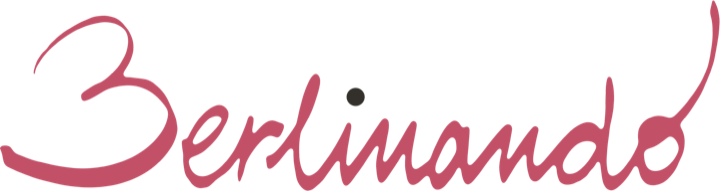

Berlim, com quem a conhece por dentro.
Dez tours privados, guiados em português — para agências e operadoras do Brasil e de Portugal.
Sou a Marta Rocha, há 14 anos trabalho como guia em Berlim. Tenho formação em Filosofia e moro na Alemanha há quase quatro décadas. Meus passeios são feitos sob medida: sem roteiro engessado, no ritmo do grupo, para quem quer vivenciar com mais profundidade a cidade. Este catálogo reúne os dez tours que eu montei para vocês saberem o que podem oferecer aos seus clientes; ao lado de cada um, a duração, o público ideal e o valor. Os roteiros também podem ser misturados, caso você necessite de uma outra variação.
Berlim Geográfica
Seis tours por lugar · 01–06A cidade percorrida pelo espaço — do centro histórico aos dois lados do Muro e a Potsdam.
O Eixo Histórico do Século XX
Uma linha que se percorre a pé e traça o arco de tensão do século XX alemão.

O Coração da Prússia
O avesso luminoso da cidade: palácios, óperas e os salões das ideias.

O Eixo das 3 Berlins
Uma visão panorâmica da cidade inteira — ideal para quem chega de cruzeiro.

Berlim Ocidental
Como o Ocidente respondeu ao Muro — do Ku'damm a Teufelsberg.
Berlim Oriental
A capital do socialismo por dentro: a vida — e a vigilância — na RDA.
Potsdam
Sanssouci e os palácios de Frederico, a 40 minutos de Berlim.
Berlim por Temas
Quatro tours, por assunto · 07–10A cidade percorrida por um fio condutor — a memória, a guerra fria, o nazismo, a presença judaica.

Sachsenhausen
A geometria do terror: o campo-modelo da SS — uma visita de compreensão.

A Guerra Fria
Da conferência de Potsdam ao Muro: espionagem e os dois lados de Berlim.
A Alemanha Nazista
O chão de Berlim onde uma democracia se deixou desmontar.
A Berlim Judaica
A história de uma comunidade que ajudou a construir Berlim — e voltou.
Os dez de relance
Para comparar e escolher rápido.
| # | Tour | Família | Duração | Ideal para | A partir de |
|---|---|---|---|---|---|
| 1 | O Eixo Histórico do Século XX | Geográfica | 4h | História do séc. XX | €400 |
| 2 | O Coração da Prússia | Geográfica | 4h | Arte, ideias, o lado luminoso | €400 |
| 3 | O Eixo das 3 Berlins | Geográfica | 6h | Berlim em um dia; cruzeiristas | €600 |
| 4 | Berlim Ocidental | Geográfica | 4h | Guerra Fria pelo lado ocidental | €400 |
| 5 | Berlim Oriental | Geográfica | 4h | Vida na RDA; socialismo | €400 |
| 6 | Potsdam | Geográfica | dia inteiro | Palácios, lagos e jardins; bate-volta | €600 |
| 7 | Sachsenhausen | Temas | dia inteiro | Campo de concentração; Memória; bate-volta | €600 |
| 8 | A Guerra Fria | Temas | ~6h | Espionagem; os dois lados | €600 |
| 9 | A Alemanha Nazista | Temas | ~4h30 | 3º Reich; Ascensão e queda do regime nazista | €450 |
| 10 | A Berlim Judaica | Temas | ~4h | Herança judaica; presença e retorno | €400 |
Valores “a partir de” = grupo de até 10 pessoas. Tabela completa por tamanho de grupo logo abaixo.
Valores para agências
Simples e transparente: cobrança por hora, por grupo (não por pessoa).
O valor de cada tour é a tarifa horária multiplicada pela duração. A agência acrescenta a sua própria margem ao vender para o cliente final.
| Duração | até 10 pax | 11–20 pax | 21–30 pax | 31–40 pax | 41–50 pax |
|---|---|---|---|---|---|
| 4 horas | €400 | €440 | €480 | €520 | €560 |
| 4h30 (nº 9) | €450 | €495 | €540 | €585 | €630 |
| 6h / dia inteiro | €600 | €660 | €720 | €780 | €840 |
Ingressos não incluídos. Museus e pontos pagos ficam por conta do cliente; combino o que vale a pena.
Reservas feitas por mim = taxa de 10% sobre o valor dos ingressos/serviços (pagamento adiantado). Itens gratuitos que exigem reserva (ex.: a Cúpula do Reichstag): taxa fixa de €10 por pessoa.
Fora de Berlim (Potsdam, Sachsenhausen): locomoção por transporte público; veículo privado com motorista sob consulta. Entradas à parte.
Grupos acima de 10 pessoas ou com dois guias: sob consulta.
Sinal de 25% para reservar e travar a data.
Como funciona
Privados e sob medida. Só o seu cliente e o grupo dele — mais ninguém. Sinto o ritmo e a profundidade que querem e conduzo por ali.
Em português nativo. Sou brasileira; guio na língua do seu cliente.
Encontro no hotel ou em ponto combinado. O visitante decide o horário; recomendo começar às 10h.
A pé, na maior parte. Quando é preciso ir longe, usamos o eficiente transporte público de Berlim — para o brasileiro, já uma imersão a mais. Isto vale para grupos de até 10–15 pax. Acima disso, recomendo o aluguel de uma van ou ônibus — que eu também posso providenciar.
WhatsApp +49 1578 5568432
Condições Gerais
Prestação de serviço de guia de turismo · Berlinando (Marta Rocha)
- Objeto. A Berlinando (Marta Rocha) presta serviço de guia de turismo — visitas guiadas privadas em Berlim e arredores. Não atua como operadora ou organizadora de viagem.
- Reserva e confirmação. A solicitação da agência é vinculante; o contrato se conclui com a confirmação por escrito da Berlinando (data, duração, ponto de encontro e valor).
- Preços e pagamento. Valores conforme a tabela deste catálogo (por hora e por tamanho de grupo; valor líquido — a agência acrescenta a sua margem). Sinal de 25% para travar a data. O saldo é pago até 3 dias antes do tour; emitimos fatura — avise se deseja recebê-la.
- Cancelamento e estorno. Gratuito até 15 dias antes; 50% de 14 a 7 dias antes; 100% com menos de 7 dias ou em caso de não comparecimento. O sinal de 25% fica retido (cobre o planejamento).
- Não comparecimento. Ausência sem aviso — ou atraso que inviabilize o serviço — equivale a cancelamento no dia (100%).
- Alterações. O roteiro pode ser adaptado a pedido do cliente ou por necessidade (clima, obras, fechamentos, segurança, força maior). Alterações a pedido do cliente que aumentem a duração são cobradas proporcionalmente; em caso de força maior, busca-se remarcar ou ajustar o roteiro.
- Ingressos e custos de terceiros. Entradas de museus e pontos pagos não estão incluídas. Reservas feitas pela Berlinando: taxa de 10% sobre o valor dos ingressos/serviços; itens gratuitos que exigem reserva (ex.: a Cúpula do Reichstag): €10 por pessoa.
- Responsabilidade. A Berlinando responde por dolo e culpa grave; para danos leves, a responsabilidade limita-se aos danos previsíveis e típicos do serviço. A Berlinando mantém seguro de responsabilidade civil profissional (Gothaer). A responsabilidade por danos à vida, ao corpo e à saúde não é limitada.
- Deveres do cliente. Chegar pontualmente ao ponto de encontro (o atraso encurta o tour, não o estende); informar na reserva necessidades especiais (mobilidade, crianças, restrições); seguir as orientações de segurança da guia; responsabilizar-se pelos menores do grupo; comunicar qualquer mudança ou cancelamento por escrito.
- Proteção de dados. Os dados são tratados apenas para a execução do serviço, conforme o RGPD/DSGVO.
- Foro e lei aplicável. Aplica-se o direito alemão; foro em Berlim.
Allgemeine Geschäftsbedingungen
Leistungen als Gästeführerin · Berlinando (Marta Rocha)
- Gegenstand. Berlinando (Marta Rocha) erbringt Leistungen als Gästeführerin — private Führungen in Berlin und Umgebung. Berlinando ist kein Reiseveranstalter und kein Reiseorganisator.
- Buchung und Bestätigung. Die Buchung der Agentur ist verbindlich; der Vertrag kommt mit der schriftlichen Bestätigung durch Berlinando zustande (Datum, Dauer, Treffpunkt und Preis).
- Preise und Zahlung. Es gelten die Preise dieses Katalogs (pro Stunde und nach Gruppengröße; Nettopreis — die Agentur schlägt ihre eigene Marge auf). Anzahlung von 25% zur verbindlichen Reservierung des Termins. Der Restbetrag ist bis 3 Tage vor der Führung zu zahlen; eine Rechnung wird ausgestellt — bitte teilen Sie mit, ob Sie sie erhalten möchten.
- Stornierung. Kostenfrei bis 15 Tage vorher; 50% von 14 bis 7 Tage vorher; 100% bei weniger als 7 Tagen oder bei Nichterscheinen. Die Anzahlung von 25% wird einbehalten (deckt die Planung).
- Nichterscheinen. Ausbleiben ohne Absage — oder eine Verspätung, die die Leistung unmöglich macht — gilt als Stornierung am Tag (100%).
- Änderungen. Die Route kann auf Wunsch des Kunden oder aus Notwendigkeit angepasst werden (Wetter, Baustellen, Schließungen, Sicherheit, höhere Gewalt). Vom Kunden gewünschte Änderungen, die die Dauer verlängern, werden anteilig berechnet; bei höherer Gewalt wird eine Verschiebung oder Anpassung angestrebt.
- Eintritte und Leistungen Dritter. Eintritte für Museen und kostenpflichtige Orte sind nicht enthalten. Von Berlinando vorgenommene Buchungen: 10% Gebühr auf den Wert der Eintritte/Leistungen; kostenlose Angebote mit Reservierungspflicht (z. B. die Reichstagskuppel): 10 € pro Person.
- Haftung. Berlinando haftet für Vorsatz und grobe Fahrlässigkeit; bei leichter Fahrlässigkeit ist die Haftung auf den vorhersehbaren, vertragstypischen Schaden begrenzt. Berlinando unterhält eine Berufshaftpflichtversicherung (Gothaer). Die Haftung für Schäden an Leben, Körper und Gesundheit ist nicht begrenzt.
- Mitwirkungspflichten des Kunden. Pünktliches Erscheinen am Treffpunkt (Verspätung verkürzt die Führung, verlängert sie nicht); Mitteilung besonderer Bedürfnisse bei der Buchung (Mobilität, Kinder, Einschränkungen); Befolgen der Sicherheitshinweise der Führerin; Aufsicht über Minderjährige in der Gruppe; Mitteilung von Änderungen oder Stornierungen in Textform.
- Datenschutz. Die Daten werden ausschließlich zur Durchführung der Leistung verarbeitet (DSGVO).
- Gerichtsstand und anwendbares Recht. Es gilt deutsches Recht; Gerichtsstand ist Berlin.